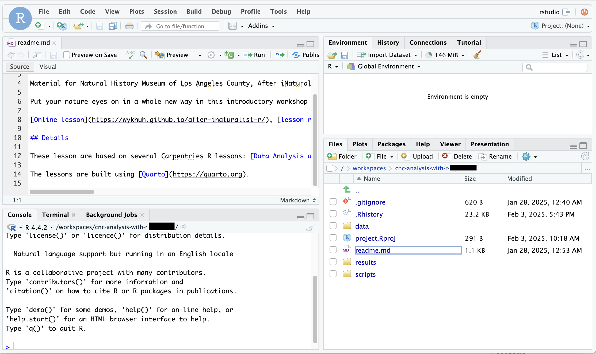

library(readr) # read and write tabular data
library(dplyr) # manipulate tabular data
library(lubridate) # manipulate dates
library(here) # file paths
library(stringr) # manipulate strings
library(ggplot2) # create data visualizations like charts and maps
library(sf) # handle vector geospatial data
library(mapview) # create interactive maps
source(here('scripts/data_utils.R')) # custom functions for workshopExample Analysis
This lesson shows how to I used some of the code samples in the previous lessons to create an analysis that has maps and charts.
My question: I want to get all research grade observations for Great Blue Heron in LA County, and compare observations near bodies of water and observations not near bodies of water.
Restart Codespace
First step is to start Codespace.
Go to data-explorers-feb-2025 Github page, and you should see your repository. Click on your repository.
Scroll to the bottom of the page, and click the “Open in GitHub Codespaces” button. This will restart the Codespace created in the “Setup Github Classroom and Codespaces” section.

This is Visual Studio Code, the default code editor for GitHub Codespaces. We want to use RStudio as our code editor.
Once the Codespace has started, it will run a script for timer, and start RStudio. In the lower right, there should be a “bash”, “Codespaces: timer”, and “Codespaces: rstudio-start”.
Click on the “PORTS” tab at the bottom.

In the PORTS tab, hover over the item named RStudio or 8787. Click on the middle globe icon to start RStudio in a new browser tab.

Now you are ready to write and run R code using RStudio.
Even though we won’t use Visual Studio Code to write R code, keep the tab for Visual Studio Code open.

Creating script
To start the analysis, I create a file called ‘heron-analysis.R’, and save it in the ‘scripts’ folder.
First step is load the R packages. These R packages provide functions that we need to analyze the City Nature Challenge data.
Select City Nature Challenge observations
There are 191K City Nature Challenge observations for LA County. I need to select the observations that I want.
First I need to import the City Nature Challenge iNaturalist CSV into R. read_csv() reads the csv. here() helps deal with file paths. I pass in the file path of the CSV to read_csv(). I use assignment arrow <- to asssign the content from read_csv() to an object called inat_data.
inat_data <- read_csv(here('data/cleaned/cnc-los-angeles-observations.csv'))Rows: 191638 Columns: 37
── Column specification ────────────────────────────────────────────────────────
Delimiter: ","
chr (26): time_observed_at, user_login, user_name, created_at, updated_at, ...
dbl (7): id, user_id, latitude, longitude, positional_accuracy, public_pos...
lgl (3): captive_cultivated, coordinates_obscured, threatened
date (1): observed_on
ℹ Use `spec()` to retrieve the full column specification for this data.
ℹ Specify the column types or set `show_col_types = FALSE` to quiet this message.read_csv() returns a dataframe. dataframe is how R represents tabular data with rows and columns. Double click on inat_data in Environment panel to see the data.
I use names() to see the column names in the dataframe. I will use the column names throughout the analysis.
names(inat_data) [1] "id" "observed_on"
[3] "time_observed_at" "user_id"
[5] "user_login" "user_name"
[7] "created_at" "updated_at"
[9] "quality_grade" "license"
[11] "url" "image_url"
[13] "sound_url" "tag_list"
[15] "description" "captive_cultivated"
[17] "latitude" "longitude"
[19] "positional_accuracy" "public_positional_accuracy"
[21] "geoprivacy" "taxon_geoprivacy"
[23] "coordinates_obscured" "scientific_name"
[25] "common_name" "iconic_taxon_name"
[27] "taxon_id" "taxon_kingdom_name"
[29] "taxon_phylum_name" "taxon_class_name"
[31] "taxon_order_name" "taxon_family_name"
[33] "taxon_genus_name" "taxon_species_name"
[35] "taxon_subspecies_name" "threatened"
[37] "establishment_means" I use filter() to select which rows I want. filter() will return rows that match one or more criteria. Each criteria usually consists of column names and values we want to match.
I want observations for ‘Great Blue Heron’. Since I want to use the Latin scientific names in my filter() query, I search iNaturalist for ‘great blue heron’, and go to its taxa page to get the scientific names. The kingdom is ‘Animalia’ and the species is ‘Ardea herodias’.
Now that I have the scientific names, I can write my filter() query. I use taxon_kingdom_name and taxon_species_name instead of scientific_name because taxon_kingdom_name and taxon_species_name will find subspecies, while scientific_name will not.
I use dim() to display the number rows and columns.
heron_obs <- inat_data %>%
filter(taxon_kingdom_name == 'Animalia' &
taxon_species_name == 'Ardea herodias')
dim(heron_obs)[1] 274 37There are 274 Great Blue Heron observations.
I also want to see how many observations are research grade. If there are a lot of “casual” or “need_id” observations, then I might also include them in my analysis.
I use table() to get the number of observations for each quality_grade value.
table(heron_obs$quality_grade)
casual needs_id research
7 1 266 Since there are a lot of ‘research’ grade observations, I’m fine with limiting the observations to ‘research’ grade.
Since I want to look for observations in a certain area, I want to exclude observations that have obscured location. I use table() to get number of observations that have obscured locations.
table(heron_obs$coordinates_obscured)
FALSE TRUE
273 1 I add additional filter() commands for research grade and unobscured coordinates.
heron_obs <- inat_data %>%
filter(taxon_kingdom_name == 'Animalia' &
taxon_species_name == 'Ardea herodias') %>%
filter(quality_grade == 'research') %>%
filter(coordinates_obscured == FALSE)
dim(heron_obs)[1] 266 37I have 266 research observations for Great Blue Heron with unobscured locations.
Note
There are lots of different ways that to filter the iNaturalist data. You need to decide what criteria you want to use to filter the iNaturalist data.
We can use unique() to double check the all the filter() queries give us the results we expect.
unique(heron_obs$taxon_kingdom_name)[1] "Animalia"unique(heron_obs$taxon_species_name)[1] "Ardea herodias"unique(heron_obs$quality_grade)[1] "research"unique(heron_obs$coordinates_obscured)[1] FALSEI save the heron observations as a CSV to the results folder using write_csv() and here(). I pass in the heron dataframe and the path to write_csv(). By default, NA values will be saved as ‘NA’. I don’t want ‘NA’ in the CSV, so I set na=''.
write_csv(heron_obs, here('results/heron_observations.csv'), na='')Create a map with CNC observations
Now that I have the observations I want, I can plot them on a map.
Since I want to create a map, I need to use st_as_sf() to convert the dataframe into a sf object. sf objects have a geometry column and other features that let us process geospatial data. I pass in “longitude” and “latitude” to coords so that st_as_sf() know which columns are the longitude and latitude columns. I set the CRS as 4326.
heron_obs_sf <- heron_obs %>%
st_as_sf(coords = c("longitude", "latitude"), crs = 4326)Now I can use mapview() to create an interactive map using the sf object heron_obs_sf. I use mapview() during the analysis because being able to zoom in and out makes it easier to explore the data.
mapview(heron_obs_sf)When I click on a blue circle on the map, a popup shows all 37 columns, which is too much information. I can use select() to limit the number of columns shown.
heron_map <- heron_obs_sf %>%
select(user_login, observed_on, common_name, taxon_species_name, image_url)
dim(heron_map)[1] 266 6Then I create another map.
Now when I click on each blue circle, the popup shows 6 fields. The geometry column is shown in the popup even though I didn’t put in select() because it is always included with sf objects.
mapview(heron_map)Add bodies of water to the map
I want to study heron observations near water. First I need to load the file with the water areas. I use read_sf() to read geospatial files such as GeoJSON and Shapefiles. read_sf() returns a sf object with a geometry column.
water_areas <- read_sf(here('data/cleaned/la_county_waterareas.geojson'))I can double click water_areas in the Environment panel to look at content. Each row in the table represents a body of water. Some records have names in FULLNAME, some do not.
When working with different geospatial data sets, we need the CRS to be the same so that everything lines up correctly. I use st_crs() to check the if the CRS of the heron observations is the same as the CRS of the water areas.
st_crs(water_areas) == st_crs(heron_obs_sf)[1] FALSESince the CRS are different, I need to use st_transform() to change CRS for the water areas so it is the same as heron observations. I pass in the water_areas sf object, and set the new CRS by passing the CRS of the heron observations to the crs argument.
Then I check if the CRS are equal.
water_areas <- st_transform(water_areas, crs = st_crs(heron_obs_sf))
st_crs(water_areas) == st_crs(heron_obs_sf)[1] TRUENow that the CRS are the same, I can add the water areas and heron observations to the map. I have two sets of data: iNaturalist heron observations and water areas boundaries. I use a separate mapview() function for each data set. I set the color for the iNaturalist observations to green with col.regions to make them easier to see.
mapview(heron_map, col.regions='green') +
mapview(water_areas)
Note
You can use color() to see a all the colors that R has available. You can use online tools to get hex colors.
Observations near bodies of water
Bodies of water like rivers are kinda narrow and birds hangout in areas around water, so selecting observations that are inside river boundaries doesn’t make sense. Instead, I want to get observations within 1/2 mile of a body of water. This means I need to create a buffer 1/2 mile for all bodies of water and find observations inside the buffers.
Note
Creating buffers is an optional step. If your analysis involves looking at the observations inside a region such as a park, neighborhood, county, etc, then you can skip the creating buffer.
create buffer
We used CRS 4326 for the iNaturalist observations. CRS 4326 uses angle degrees. To create a buffer for a certain distance, I need to change the CRS to a CRS that uses meters. CRS 5070 uses meters.
water_areas_5070 <- st_transform(water_areas, crs=5070)Then I use st_buffer() to create a buffer. 1/2 miles is about 805 meters. I pass in water_areas_5070 and the size of the buffer.
buffer_water_areas_5070 <- st_buffer(water_areas_5070, 805)After creating the buffer, I need to change the CRS back to 4326.
buffer_water_areas <- st_transform(buffer_water_areas_5070, crs=st_crs(heron_obs_sf))Then I can create a map with the buffers.
mapview(heron_obs_sf, col.regions='green') +
mapview(buffer_water_areas) +
mapview(water_areas)Looking at the map, I notice that most ‘Great Blue Heron’ observations are near bodies of water. I also notice that some of the smaller bodies of water aren’t included in ‘water_areas’.
observations near water, version 1
Now that I have the buffers, I need to get observations inside the buffer.
st_intersects() tells you if one geographic object is within or touching another geographic object. lengths(st_intersects()) >0 returns TRUE if an object is within or touching another object, otherwise returns FALSE. Then I use the TRUE/FALSE vector to select observations in a dataframe using dataframe[lengths(st_intersects()) >0, ].
The following code returns all heron observations that that is within or touching the water area buffers.
heron_near_water_sf <-
heron_obs_sf[lengths(st_intersects(heron_obs_sf, buffer_water_areas)) > 0, ]
dim(heron_near_water_sf)[1] 240 36I have 240 observations near water.
Then I can create a map with the observations , buffers, and water areas.
mapview(heron_near_water_sf, col.regions='green') +
mapview(buffer_water_areas) +
mapview(water_areas)observations near water, version 2
While the previous code let me get the observations that were near water, I wasn’t able to capture the observations not near water. I can adjust the code to add a column with TRUE/FALSE values to heron_obs_sf so I can keep track of which observations are near and not near a body of water.
lengths(st_intersects()) >0 produce a vector with TRUE/FALSE values. I can use mutate() to add a near_water column that stores the TRUE/FALSE values.
heron_near_water_sf <- heron_obs_sf %>%
mutate(near_water = lengths(st_intersects(heron_obs_sf, buffer_water_areas)) > 0)I can use table() to get a count of the observations near water.
table(heron_near_water_sf$near_water)
FALSE TRUE
26 240 240 observations are near water, 26 are not near water.
Next I save the iNaturalist observations as a csv.
write_csv(heron_near_water_sf, here('results/heron_near_water.csv'), na='')observations near lakes in Whittier Narrows Recreation Area
While looking at the interactive maps, I noticed a cluster of heron observation for the three lakes in Whittier Narrows Recreation Area. I want to examine that area. I need to create filter() query to select the three lakes.
When you click on each body of water, a popup appears that show info about each body of water. Only one of the lakes have a FULLNAME, so I can’t use FULLNAME to select the lakes. HYDROID is a unique ID for each body of water, so I can get the HYDROID from the popup, and create a filter() query to select the three lakes.
I create a vector with the HYDROID, and use filter() and %in% to find records that match the ids.
ids <- c(1101584241267, 1101584241127, 1101584238995)
WNRA <- water_areas %>%
filter(HYDROID %in% ids)When I click on WNRA in the Enviroment panel, I see the three records.
I can create a buffer around the three lakes, and get the heron observations near the lakes.
WNRA_5070 <- st_transform(WNRA, crs=5070)
buffer_WNRA_5070 <- st_buffer(WNRA_5070, 805)
buffer_WNRA <- st_transform(buffer_WNRA_5070, crs=st_crs(heron_obs_sf))I use dataframe[lengths(st_intersects()) >0, ] to get the observations within the buffer.
heron_WNRA_sf <- heron_obs_sf[lengths(st_intersects(heron_obs_sf, buffer_WNRA)) > 0, ]
dim(heron_WNRA_sf)[1] 15 36There are 15 observations in that area.
I then create a map for heron observations near the lakes in Whittier Narrows Recreation Area.
mapview(heron_WNRA_sf, col.region='green') +
mapview(WNRA)
Note
Anytime you have a file with lots of boundaries but you only want a few of the boundaries, use the filter(column == value) or filter(column %in% c(values)) to get the boundaries for the regions you want. You can get the column names and values by looking at the spreadsheet-like viewer from RStudio or by looking at the popup table from mapview maps.
Create chart
I want to create a bar chart that shows the heron observations near water. I use ggplot() + geom_bar() to create a bar chart. I use the column near_water for the x axis, and geom_bar() will count the number of records and use the count for the y axis.
ggplot()+
geom_bar(data=heron_near_water_sf, mapping=aes(x=near_water))
Note
To create line charts, you would use geom_line(). You need to pass in a column for x axis and column for y axis when using geom_line() .
Next I want to update the appearance of the chart. I use label function labs() to add titles, subtitle, and axis labels. I use fill='#77b100' to set the fill color to iNaturalist’s green color. I use theme_bw() and theme() to change overall appearance of the chart.
I assign the code for the chart to heron_chart object.
heron_chart <- ggplot()+
geom_bar(data=heron_near_water_sf, mapping=aes(x=near_water), fill='#77b100') +
labs(title = 'CNC observations for Great Blue Herons in LA County',
subtitle='2016-2024',
x='Within 1/2 mile of water',
y='observations count') +
theme_bw() +
theme(title = element_text(size = 14),
panel.grid.major.x = element_blank(),
panel.grid.minor.x = element_blank())
heron_chart
Note
If you find that large chunk of code is too confusing, that’s ok. You can just do a black and white chart.
I use ggsave() to save charts created with ggplot. I pass in the file path and heron_chart. I save the image in the results folder. The file path ends with .jpg because I want a jpeg image. I also set the height and width for the image.
ggsave(filename = here('results/heron_observations_near_water_chart.jpg'),
plot = heron_chart, height = 6, width = 8)
Note
You can also save the charts as PDF (.pdf), TIFF (.tiff), and PNG (.png)
Create map
I want to create a nice looking map for my presentation. ggplot offers more ways to customize the look of the map than mapview, so I use ggplot to create my final map.
One thing I want to add to the map is LA County boundary. I load the LA County file using read_sf()
LA_county <- read_sf(here('data/cleaned/los_angeles_county/los_angeles_county.shp'))I create a map with LA County boundaries, water areas, and heron observations using ggplot() + geom_sf(). Since there are three different sets of data, I add a separate geom_sf() for each sf object. I use fill= to color the LA County and water areas one color. I use mapping=aes(color=near_water) to color code the observations based on if they are near water.
ggplot() +
geom_sf(data=LA_county, fill='white') +
geom_sf(data=heron_near_water_sf, mapping=aes(color=near_water)) +
geom_sf(data=water_areas, fill='#007399')
I use labs() to add titles, subtitle, legend title. I use theme_void() and theme() to change overall appearance of the map.
I assign the code for the chart to heron_final_map object.
heron_final_map <- ggplot() +
geom_sf(data=LA_county, fill='white') +
geom_sf(data=heron_near_water_sf, mapping=aes(color=near_water)) +
geom_sf(data=water_areas, fill='#007399') +
labs(title = 'CNC observations for Great Blue Herons in LA County',
subtitle='2016-2024',
color='Within 1/2 mile of water') +
theme_void() +
theme(title = element_text(size = 13))
heron_final_map
Note
If you find that large chunk of code, too confusing, that’s ok. You can do a more simple map like the first example.
I use ggsave() to save maps created with ggplot. The file path ends with .jpg because I want a jpeg image.
ggsave(filename = here('results/heron_observations_near_water_map.jpg'),
plot = heron_final_map, height = 8, width = 8)
Note
You can also save the maps as PDF (.pdf), TIFF (.tiff), and PNG (.png)
Download iNaturalist images
I also want include some images of heron in my presentation.
I wrote some custom functions to download images from iNaturalist.
Note
I don’t expect anyone in the workshop to understand this code. I just put the code here because I didn’t have time update the code in everyone’s repo. All you need to do is copy all this code into your script, and run the download_inaturalist_images() function.
format_image_filename <- function(row) {
if('scientific_name' %in% names(row)) {
taxa = row$scientific_name
} else if ('common_name' %in% names(row)) {
taxa = row$common_name
} else if ('taxon_subspecies_name' %in% names(row)) {
taxa = row$taxon_subspecies_name
} else if ('taxon_species_name' %in% names(row)) {
taxa = row$taxon_species_name
} else if ('taxon_genus_name' %in% names(row)) {
taxa = row$taxon_genus_name
} else if ('taxon_family_name' %in% names(row)) {
taxa = row$taxon_family_name
} else if ('taxon_order_name' %in% names(row)) {
taxa = row$taxon_order_name
} else if ('taxon_class_name' %in% names(row)) {
taxa = row$taxon_class_name
} else if ('taxon_phylum_name' %in% names(row)) {
taxa = row$taxon_phylum_name
} else if ('taxon_kingdom_name' %in% names(row)) {
taxa = row$taxon_kingdom_name
} else {
taxa = ''
}
if('observed_on' %in% names(row)) {
date = row$observed_on
} else {
date = ''
}
if('id' %in% names(row)) {
id = row$id
} else {
id = row$row_id
}
if('user_login' %in% names(row)) {
user = row$user_login
} else {
user = ''
}
if('license' %in% names(row)) {
license = row$license
} else {
license = ''
}
# create filename
taxa = gsub('([[:punct:]])', '', taxa)
id = gsub('([[:punct:]])', '', id)
user = gsub('([[:punct:]])', '', user)
license = gsub('([[:punct:]])', '', license)
filename = paste0(paste(taxa, date, id, user, license, sep='_'), '.jpg')
filename = gsub(' ', '_', filename)
filename
}
download_row_image <- function(row) {
Sys.sleep(1)
if(!'image_url' %in% names(row)) {
stop('the iNaturalist data must have "image_url" column')
}
url = row$image_url
# create directories
dir.create(here('results/images'), showWarnings = FALSE)
# download the image
tryCatch({
filename = format_image_filename(row)
filepath = here('results/images', filename)
# print(filepath)
download.file(url, filepath)
},
error = function(e){
message('Could not download image.')
print(e)
})
}
download_inaturalist_images <- function(inat_df) {
temp_df <- inat_df
temp_df$row_id <- rownames(temp_df)
# turn observed_on to a string because apply screws up date objects
if('observed_on' %in% names(temp_df)) {
temp_df <- temp_df %>%
mutate(observed_on= format(observed_on, format="%Y-%m-%d"))
}
apply(temp_df, 1, download_row_image)
}I use filter() to select observations that have ‘CC0’, ‘CC-BY’, or ‘CC-BY-NC’ license. Some iNaturalist observations do not have images. In order to select observations that have images, I use !is.na(image_url) . ! means not; is.na checks if the value equals NA; !is.na(image_url) will select records where image_url is not NA. I use slice_sample(n=3) to get 3 random observations. Then I use download_inaturalist_images() to download images. The images are saved in ‘results/images’ folder.
heron_images <- heron_near_water_sf %>%
filter(license %in% c('CC0', 'CC-BY', 'CC-BY-NC')) %>%
filter(!is.na(image_url)) %>%
slice_sample(n=3)
download_inaturalist_images(heron_images)Download files from Codespace
I saved CSVs and images to Codespace. I then need to download the files to my computer.
Use the RStudio “Files” tab in the lower right corner. Click on the folders and green up arrow to navigate through the directories. Click the checkbox to select the files you want.

Click “More” and a popup window will appear. Click “Export…”

Click “Download” button on the popup window. The files will be saved to folder that your browser uses for the downloads.
Stop Codespace
After I finish my work for the day, I need to stop R, push my code changes to my repository and, stop Codespace.
To stop R, click the orange circle in the upper right of RStudio.

I will see a message “R Session Ended”. Close the browser tab for RStudio.

Go to the Visual Studio Code browser tab. Click “bash”. Click “TERMINAL”.

To save the changed files to my repository, type “bash scripts/save_files.sh” after the $, and hit return/enter.

To stop Codespace, click the blue area in the lower left corner of Visual Studio Code.

A popup window will appear. Click “Stop Current Codespace”.

After a little while, I will see a “Codespace is stopped” message. I can now close the browser tab.

Complete script
Here is all the code for the analysis. Some of the code is for checking results, such as name(), dim(), and table(). Some of the code such as ‘observations near water, version 1’ are things that I tried but end up not using because I tried something else.
## =================
## load_packages
## =================
library(readr) # read and write tabular data
library(dplyr) # manipulate tabular data
library(lubridate) # manipulate dates
library(here) # file paths
library(stringr) # manipulate strings
library(ggplot2) # create data visualizations like charts and maps
library(sf) # handle vector geospatial data
library(mapview) # create interactive maps
source(here('scripts/data_utils.R')) # custom functions for workshop
## =================
## Select City Nature Challenge observations
## =================
inat_data <- read_csv(here('data/cleaned/cnc-los-angeles-observations.csv'))
names(inat_data)
heron_obs <- inat_data %>%
filter(taxon_kingdom_name == 'Animalia' &
taxon_species_name == 'Ardea herodias')
dim(heron_obs)
table(heron_obs$quality_grade)
table(heron_obs$coordinates_obscured)
heron_obs <- inat_data %>%
filter(taxon_kingdom_name == 'Animalia' &
taxon_species_name == 'Ardea herodias') %>%
filter(quality_grade == 'research') %>%
filter(coordinates_obscured == FALSE)
dim(heron_obs)
unique(heron_obs$taxon_kingdom_name)
unique(heron_obs$taxon_species_name)
unique(heron_obs$quality_grade)
unique(heron_obs$coordinates_obscured)
write_csv(heron_obs, here('results/heron_observations.csv'), na='')
## =================
## Create a map with CNC observations
## =================
heron_obs_sf <- heron_obs %>%
st_as_sf(coords = c("longitude", "latitude"), crs = 4326)
mapview(heron_obs_sf)
heron_map <- heron_obs_sf %>%
select(user_login, observed_on, common_name, taxon_species_name, image_url)
mapview(heron_map)
## =================
## Add bodies of water to the map
## =================
water_areas <- read_sf(here('data/cleaned/la_county_waterareas.geojson'))
st_crs(water_areas) == st_crs(heron_obs_sf)
water_areas <- st_transform(water_areas, crs = st_crs(heron_obs_sf))
st_crs(water_areas) == st_crs(heron_obs_sf)
mapview(heron_map, col.regions='green') +
mapview(water_areas)
## =================
## Observations near bodies of water
## =================
## create buffer
water_areas_5070 <- st_transform(water_areas, crs=5070)
buffer_water_areas_5070 <- st_buffer(water_areas_5070, 805)
buffer_water_areas <- st_transform(buffer_water_areas_5070, crs=st_crs(heron_obs_sf))
mapview(heron_obs_sf, col.regions='green') +
mapview(buffer_water_areas) +
mapview(water_areas)
## observations near water, version 1
heron_near_water_sf <-
heron_obs_sf[lengths(st_intersects(heron_obs_sf, buffer_water_areas)) > 0, ]
dim(heron_near_water_sf)
mapview(heron_near_water_sf, col.regions='green') +
mapview(buffer_water_areas) +
mapview(water_areas)
## observations near water, version 2
heron_near_water_sf <- heron_obs_sf %>%
mutate(near_water = lengths(st_intersects(heron_obs_sf, buffer_water_areas)) > 0)
table(heron_near_water_sf$near_water)
write_csv(heron_near_water_sf, here('results/heron_near_water.csv'), na='')
### observations near lakes in Whittier Narrows Recreation Area
ids <- c(1101584241267, 1101584241127, 1101584238995)
WNRA <- water_areas %>%
filter(HYDROID %in% ids)
WNRA_5070 <- st_transform(WNRA, crs=5070)
buffer_WNRA_5070 <- st_buffer(WNRA_5070, 805)
buffer_WNRA <- st_transform(buffer_WNRA_5070, crs=st_crs(heron_obs_sf))
heron_WNRA_sf <- heron_obs_sf[lengths(st_intersects(heron_obs_sf, buffer_WNRA)) > 0, ]
dim(heron_WNRA_sf)
mapview(heron_WNRA_sf, col.region='green') +
mapview(WNRA)
## =================
## Create chart
## =================
ggplot()+
geom_bar(data=heron_near_water_sf, mapping=aes(x=near_water))
heron_chart <- ggplot()+
geom_bar(data=heron_near_water_sf, mapping=aes(x=near_water), fill='#77b100') +
labs(title = 'CNC observations for Great Blue Herons in LA County',
subtitle='2016-2024',
x='Within 1/2 mile of water',
y='observations count') +
theme_bw() +
theme(title = element_text(size = 14),
panel.grid.major.x = element_blank(),
panel.grid.minor.x = element_blank())
heron_chart
ggsave(filename = here('results/heron_observations_near_water_chart.jpg'),
plot = heron_chart, height = 8, width = 8)
## =================
## Create map
## =================
LA_county <- read_sf(here('data/cleaned/los_angeles_county/los_angeles_county.shp'))
ggplot() +
geom_sf(data=LA_county, fill='white') +
geom_sf(data=heron_near_water_sf, mapping=aes(color=near_water)) +
geom_sf(data=water_areas, fill='#007399')
heron_final_map <- ggplot() +
geom_sf(data=LA_county, fill='white') +
geom_sf(data=heron_near_water_sf, mapping=aes(color=near_water)) +
geom_sf(data=water_areas, fill='#007399') +
labs(title = 'CNC observations for Great Blue Herons in LA County',
subtitle='2016-2024',
color='Within 1/2 mile of water') +
theme_void() +
theme(title = element_text(size = 13))
heron_final_map
ggsave(filename = here('results/heron_observations_near_water_map.jpg'),
plot = heron_final_map, height = 6, width = 8)
## =================
## Download iNaturalist images
## =================
# custom functions to download iNaturalist images - begin
format_image_filename <- function(row) {
if('scientific_name' %in% names(row)) {
taxa = row$scientific_name
} else if ('common_name' %in% names(row)) {
taxa = row$common_name
} else if ('taxon_subspecies_name' %in% names(row)) {
taxa = row$taxon_subspecies_name
} else if ('taxon_species_name' %in% names(row)) {
taxa = row$taxon_species_name
} else if ('taxon_genus_name' %in% names(row)) {
taxa = row$taxon_genus_name
} else if ('taxon_family_name' %in% names(row)) {
taxa = row$taxon_family_name
} else if ('taxon_order_name' %in% names(row)) {
taxa = row$taxon_order_name
} else if ('taxon_class_name' %in% names(row)) {
taxa = row$taxon_class_name
} else if ('taxon_phylum_name' %in% names(row)) {
taxa = row$taxon_phylum_name
} else if ('taxon_kingdom_name' %in% names(row)) {
taxa = row$taxon_kingdom_name
} else {
taxa = ''
}
if('observed_on' %in% names(row)) {
date = row$observed_on
} else {
date = ''
}
if('id' %in% names(row)) {
id = row$id
} else {
id = row$row_id
}
if('user_login' %in% names(row)) {
user = row$user_login
} else {
user = ''
}
if('license' %in% names(row)) {
license = row$license
} else {
license = ''
}
# create filename
taxa = gsub('([[:punct:]])', '', taxa)
id = gsub('([[:punct:]])', '', id)
user = gsub('([[:punct:]])', '', user)
license = gsub('([[:punct:]])', '', license)
filename = paste0(paste(taxa, date, id, user, license, sep='_'), '.jpg')
filename = gsub(' ', '_', filename)
filename
}
download_row_image <- function(row) {
Sys.sleep(1)
if(!'image_url' %in% names(row)) {
stop('the iNaturalist data must have "image_url" column')
}
url = row$image_url
# create directories
dir.create(here('results/images'), showWarnings = FALSE)
# download the image
tryCatch({
filename = format_image_filename(row)
filepath = here('results/images', filename)
# print(filepath)
download.file(url, filepath)
},
error = function(e){
message('Could not download image.')
print(e)
})
}
download_inaturalist_images <- function(inat_df) {
temp_df <- inat_df
temp_df$row_id <- rownames(temp_df)
# turn observed_on to a string because apply screws up date objects
if('observed_on' %in% names(temp_df)) {
temp_df <- temp_df %>%
mutate(observed_on= format(observed_on, format="%Y-%m-%d"))
}
apply(temp_df, 1, download_row_image)
}
# custom functions to download iNaturalist images - end
heron_images <- heron_near_water_sf %>%
filter(license %in% c('CC0', 'CC-BY', 'CC-BY-NC')) %>%
filter(!is.na(image_url)) %>%
slice_sample(n=3)
download_inaturalist_images(heron_images)